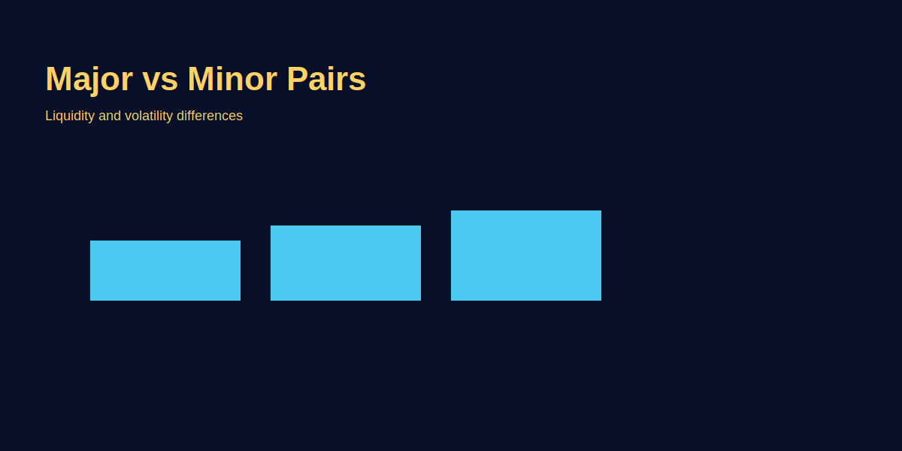

Major vs Minor Pairs
Problem-based introduction
Traders confuse majors and minors: kitne pairs trade karein, spreads kya hote hain, aur kya choose karein practice ke liye. Simple guide to pick the right pairs and why GOLD (XAU/USD) is sometimes easier to read for macro moves.
Step-by-step explanation
- Majors: Pairs with USD leg (EUR/USD, GBP/USD, USD/JPY) — high liquidity, lower spreads.
- Minors: Pairs without USD (EUR/GBP, EUR/JPY) — lower liquidity, wider spreads.
- Choice for beginners: Start with majors; trade GOLD via XAU/USD if you prefer commodity exposure.
Real trading logic (GOLD example)
When USD is the dominant driver, majors reflect that quickly. GOLD (XAU/USD) often shows large moves around macro shocks; use it to learn macro-sensitivity.
Image-based examples (mandatory)
Common Mistakes
- Using same strategy for all pairs without adjusting for spread/liquidity.
- Ignoring session overlap that affects majors differently than minors.
Pro Tips
- Backtest your strategy per pair; do not assume transferability.
- Use majors for tight cost and better fills when starting out.
Risk Warning
Different pairs have different cost structures; always include spread in trade planning.
SEO FAQs
- 1. Kya major pairs beginners ke liye best hain?
- Haan, lower spreads aur higher liquidity ke karan majors beginners ko suit karte hain.
- 2. Kya minor pairs profitable ho sakte hain?
- Haan, lekin higher spread and slippage ko factor karo.